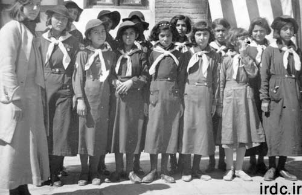
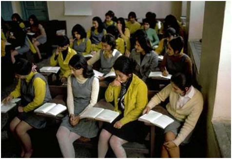
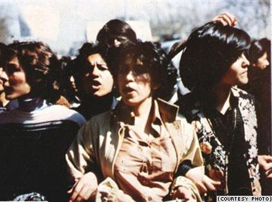
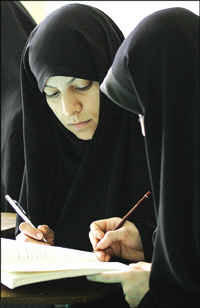

پذيرش > سایت نوشته ها > جنبش زمانه ی ما و جنبش مشروطيت /شکوه میرزادگی


 جنبش زمانه ی ما و جنبش مشروطيت /شکوه میرزادگی جنبش زمانه ی ما و جنبش مشروطيت /شکوه میرزادگی
15 مرداد 1388 - - نسخه قابل چاپ
به زنان سرزمينم که جهان را مبهوت خويش کرده اند
امروز سالروز انقلاب مشروطيت است؛ روزی که نهادی به نام «مجلس شورای ملی ايران» با معنا و مفهومی امروزی به رسميت شناخته شد؛ همان جايي که امروز، با داشتن نام «مجلس شورای اسلامی» ميزبان کسی است که در آن سوگند می خورد تا نظامی را پاسداری کند که در آن نه از مردم خبری هست و نه از شورايي ملی ومردمی و نه حقوقی که از آن ملتی باشد به نام ايران؛ کسی در آن سوگند می خورد که کارگزار و تدارک چی شيخ فضل الله نوری است و به نام تفکر او، با چماق مشروعيت، بر تن و جان آزادی خواهانی می کوبد که می خواستند و می خواهند تا سرزمين گرفتار خفقان و بيچارگی و خرافات خود را به جهان مدرن برسانند.
بيرون اين مجلس اما، امروز، فرزندان راستين همان مشروطه خواهان يک قرن پيش؛ آن ها که اکنون از مشروطيت گذشته و به حقوق بشر رسيده اند و با مدنيت و آرامش متمدنانه ی انسان قرن بيست و يکم حق طلبی می کنند ايستاده اند. درست در معرض همان چوب و چماق فرزندان شيخ فضل الله نوری ها.
جنبش اجتماعی شگرف اخير ايران (با هر نامی که آن را بخوانيم) به راستی از مهمترين و متمدنانه ترين جنبش های زمانه ی ما است؛ و به خصوص حضور گسترده، مثبت و تاثير گذار زنان، هم دوش و هم وزن مردان در آن نشان از اعلام رسمی خواست هايي دارد که کاملا به هنگام و کارسازند. اين حضور مثبت يک بار ديگر نشان داد که پست و بلند جنبش برابری خواهی زنان کشورمان، همان گونه که در همه ی جهان، ربطی آشکار و مستقيم با جنبش های گسترده ی آزادی خواهی اجتماعی دارد.
در واقع اگر اين حضور به هنگام و درست نباشد نه تنها که برابری خواهی زنان، که آزادی خواهی های اجتماعی کل يک جامعه در خطر سقوط قرار می گيرد. درست همانگونه که جنبش منتهی به انقلاب 57 به صورتی نابهنگام و نادرست پيش رفت و ديديم که چگونه اثر منفی خود را هم در مورد زنان ما و هم در مورد آزادی خواهی و حتی استقلال سرزمين مان نشان داد. و به اين ترتيب ، تنها در صورتی که جنبش امروز نيز به آرمان های وسيع خود وفادار بماند و آن را به بيراهه نکشانند می توان اميد داشت که چون جنبش مشروطيت بر ما درهايي را بگشايد که رو به سوی روشنی و فردا دارند.
پس، بدنيست اگر، با تمرکز بر خواست های زنان، نگاهی بيندازيم به خواست های سه جنبش بزرگ تاريخ معاصر کشورمان: جنبش مشروطيت يا انقلاب مشروطیت، انقلاب 57 يا انقلاب اسلامی، و جنبش تازه به دنيا آمده و در حال تلاطم و رشد کنونی.
تقريباً اکثر تاريخ شناسان و گزارشگران، پيدايش جنبش زنان در ايران را (با يک تفاوت 50 شصت ساله با جنبش های برابری خواهی زنان در غرب) با شروع عصر بيداری ايرانيان و شکل گرفتن جنبش مشروطه خواهی که به انقلاب مشروطه منتهی شد همزمان می دانند. پايه و اساس مشروطيت خواهی بر خواستاری مدرنيزه کردن نهادهای اجتماعی، نزديک شدن به فرهنگ غرب، و خارج شدن از زير بار استعمار کشورهايي چون روسيه وانگليس، رفع استبداد داخلی و رسيدن به آزادی های اجتماعی استوار بود و، در نتيجه، می توانست جايگاه مناسب و درستی برای متولد شدن جنبش زنان ايران هم باشد.
همه می دانيم که تا قبل از شکل گيری مشروطه خواهی، زنان ايران قرن ها بود که از شخصيتی حقوقی برخوردار نبودند. يعنی، در پی حمله ی اعراب به ايران، سيصد سال جنگ و گريز و کشتارهای گسترده، و بالاخره تثبيت تحميلی مذهب اسلام به عنوان مذهب اکثريت ايرانيان، و به خصوص در دوران صفويه و رسمی شدن تشيع دوازده امامی، همواره اثرات اجتماعی اين تحولات به سرعت بر زندگی زنان ما ظهور کرده و موجب تخريب شخصيت اجتماعی آن ها شده است. در واقع، با سقوط استقلال ايران و فرو خورده شدنش بوسيله ی خلافت اسلامی، زن ايرانی ديگر صاحب حقوق به حساب نمی آمد و انسان تمام شناخته نمی شد. او وسيله ای بود برای لذت و توليد مثل و اداره ی خانه ی مرد که حتی اجازه ی حضور مستقل در اجتماع نيز از او گرفته شده بود. (در اين جا لازم است که بگويم به نظر من وضعيت زنان در دوران تسلط مغول ها بر ايران به مراتب بهتر از زمان حمله اعراب و پس از آن بود. نگاهی به تاريخ نشان می دهد که پس از حمله ی هراس انگيز مغول و کشتارهای بی امان شان، وقتی که آن ها بالاخره در ايران مستقر شده و در جايگاه کشورداری نشستند، از آنجا که صاحب ايدئولوژی نبوده، و مذهبی «گسترده خواه» نداشتند، و از آنجا که در فرهنگ ايلی شان زن و مرد دارای جايگاه های اجتماعی و سياسی متفاوتی نبودند، زنان ايران نيز فرصت يافتند تا خودی نشان دهند، و حتی در مقامات بالای سياسی ايالت های مختلف بنشينند و با اقتدار بر بخش هايي از ايران حکومت کنند.
اين گونه بود که جنبش مشروطه خواهی، با تبليغ ارزش های متناسب با تمدن آن روز بشر متمدن و پيشرفته اثرات حيرت انگيزی بر زندگی زنان ما گذاشت. در آن دوران روشنفکران زن و مرد ما از فضای آزادی خواهی موجود استفاده کرده و در جهت سوادآموزی زنان، تاسيس و گسترش مدارس دخترانه، تشکيل انجمن های مربوط به زنان، انتشار روزنامه ها و مجله هايي برای زنان که در آن خواستاری حق رای برای آنها مطرح شد، و نيز طلب حق حضور در فعاليت های فرهنگی و سياسی و حتی تساوی حقوقی با مردان، شرکتی فعال (اگرچه نه گسترده) داشتند. اما، پس از استقرار مشروطيت، به خاطر حضور و فشار متعصبين مذهبی، زن ها امتيازهاي قانونی چندانی به دست نياوردند. مثلاً، شيخ فضل الله نوری، يکی از دشمنان اصلی مشروطه خواهی (که «مشروعه خواهان» جمهوری اسلامی از او به عنوان يکی از مهمترين منابع الهام خود ياد کرده و خود را پيرو او می دانند) در همان زمان به صراحت اعلام کرد که «تاسيس مدارس دخترانه مخالف با شرع اسلام» است. يا گفت که «وای به حال مملکتی که در آن مدارس دخترانه تاسيس شود!»
حتی شيخ اسدالله، نماينده ی مجلس، که ظاهراً کمی متجددتر از او بود، فرياد برآورده بود که:« صحبت از حضور زنان در جامعه و در مجلس با روح يک مجلس اسلامی در تناقض است». او می گفت: «دليل حذف زنان اين است که خدا به آنان ظرفيت لازم برای شرکت در فعاليت های سياسی و انتخابات نمايندگان ملت را نداده است. آنان جنس ضعيف ترند و توانايي مردان را ندارند. حق آنان نبايد لگدمال شود بلکه بايد توسط مردان، همان طور که خداوند قادر متعال در قران فرموده، حفاظت شود!»
به هر حال، اکنون اين نکته روشن است که جنبش مشروطه سبب شد که، از يکسو، به زنان نگاهی تازه شود و او را ديگر موجودی بی دست و پا و خانه نشين نبينند و، از سوی ديگر، زن ها نيز متوجه اهميت حضور خودشان به عنوان انسانی «نه ضعيفه و نه منفعل» بشوند و زندگی تازه ای را آغاز کنند.
اکنون اگر، بقول مونتسکيو، به «روح» آزادی خواه و عدالت پرور جنبش مشروطه برگرديم در می يابيم آن چه که زنان ايران در پی انقلاب مشروطيت به دست آوردند ـ چه بخاطر تلاش های خستگی ناپذيرخودشان و چه به دليل سرپيچی متمدنانه ی شاهان پهلوی از قوانين زن ستيزانه ی موجود در قانون اساسی مشروطيت و «غيرقانونی» عمل کردن به نفع آزادی زنان ـ همگی دقيقاً در راستای همان «روح» ی بوده است که تحقق اش، به دليل دخالت مستبدانه ی روحانيون وقت، جنبه ی قانونی بخود نگرفته و در قانون اساسی مشروطه نيامده است. بنظر من، اين يک «سرپيچی از قانون اساسی مشروطه» از آن جهت با سرپيچی از ديگر قوانينی که در زمان شاهان پهلوی ناديده گرفته شدند (مثل آزادی مطبوعات، آزادی بيان، و آزادی های سياسی) متفاوت است. چرا که حاصل آنها در راستای تحقق «روح مشروطه» عمل می کرده و با اصول آزادی خواهی و عدالت گستری آن تضادی نداشته است. در حالی که سد راه آزادی زنان نشدن و قانونی کردن حقوق زنان در دوران پهلوی ها تحقق بخشيدن به بخش ناديده گرفته شده ی مطالبات مشروطه محسوب می شود.
به هر حال، همه ی امتيازات به دست آمده و داده شده به زنان، در طی هفتاد سال پس از انقلاب مشروطه و تا مقطع انقلاب 57، اثرات شگرفی بر سرگذشت نه تنها زنان که بر کل حيات اجتماعی سرزمين ما داشته است. در واقع، در آستانه ی انقلاب 57، زنان ما از نظر قانونی از زنان همه ی کشورهای مسلمان خاورميانه جلوتر بودند؛ و قوانين مربوط به زنان در سرزمين ما، به جز چند مورد مثل «شرط سفر زن با اجازه مرد» و يا «تفاوت ارث ميان زن و مرد» هيچ تفاوتی (تاکيد می کنم از نظر قانونی) با زنان اروپايي و آمريکايي نداشت.
روشنفکران جنبش مشروطه، با درکی روشن و زنده از ضروريات دنيای مدرن، خواست برابری زن و مرد را در شعارها و نوشته های خود منظور می کردند و از آنجا که فضای هراس انگيز زمانه شان ـ در تسلط تعصبات مذهبی و انواع خرافه های خردگريز ـ سخن گفتن از برابری زن و مرد را برنمی تافت، آنها خواست هاشان در مورد زنان را بر دو موضوع «سواد آموزی زنان» و «حذف حجاب اجباری» متمرکز کردند؛ چرا که اين دو اصل می توانست زن ها را به جامعه بکشانند. طرح همين خواست ها در آن زمانه واقعا ستايش برانگيز و شجاعانه بوده است.
مقايسه ی سريع روشنفکران انقلاب مشروطه 1285 و انقلاب مشروعهء 1357 نشان می دهد که نگاه پيشآهنگان جنبش مشروط به سوی غرب پيشرفته و ـ از نظر حقوقی ـ متمدن بود و طبعا می ديدند که مساله زن و خواست زن برای برابری در رده ی اول خواست های جنبش های مغرب زمين جای دارد. در حالی که بيشتر روشنفکران زمان انقلاب 57 پشت به غرب کرده و در جهت شعار «نه شرقی نه غربی» حرکت می کردند که يکسره در نفی ريشه داشت و چيزی برای اثبات با خود نياورده بود و به همين دليل عبارت بی معنا و متضاد «جمهوری اسلامی» توانست به راحتی آن را تکميل کند. در واقع، اين زهر را در دوران آماده شدن برای اين انقلاب افرادی چون شايگان و آل آحمد و شريعتی و امثال آن ها در رگ روشنفکری ما تزريق کرده و زلالی آزادی خواهانه آن به خصوص در مورد زن ها را به تيرگی مرگبار کنونی کشاندند.
در انقلاب 57، که به درستی نام انقلاب اسلامی را به خود گرفت، در مورد زنان هم اصل بر نفی و حذف گذاشته شده بود و آمده بود تا آنچه را که آنان به دست آورده بودند لغو و بی اثر کند. شعار آزادی و استقلال هم، اگر چه شعاری هم سو با شعار جنبش مشروطه می توانست باشد، با اضافه شدن «جمهوری اسلامی» به آن دارای تناقضی روشن و آشکار شد؛ برای هر ملت و سرزمينی، مفاهيمی همچون آزادی و استقلال رويي گشاده به سوی عدالت و عدم تبعيض دارند و نمی تواند به مجموعه ای مقيد شوند که آن ها را منتفی می کند. آن آزادی و استقلالی نيز که به پسوند جمهوری اسلامی تن داده بود نمی توانست معنايي جز آزادی و استقلال يک بخش خاص و مردانه جامعه که آزادی و برابری نيمی از مردمان را به خاطر جنسيت يا مذهب شان نفی می کرد داشته باشد. اسلامیت آنچه جمهوری اسلامی خوانده می شد نمی توانست نتيجه ای جز بيهوده ساختن و ممنوع کردن هر نوع آزادی و استقلال بيرون از محدوده ی ايدئولوژِی حاکمان اين «جمهوريت» داشته باشد.
جنبش کنونی مردم سرزمين مان، به خصوص تا آنجا که به زنان و طرفداران برابری زنان و مردان مربوط می شود، به خوبی با اين مشکل و تنگنای نفس گير واقف است، بطوری که کانديداهای رياست جمهوری به شکل های مختلفی نشان می دادند که مخالف برابری زن و مرد نيستند. و حتی مسلمانان مومن شرکت کننده در اين انتخابات نيز چنان متوجه اين عدم برابری زن و مرد در کل اين حکومت هستند که با ديدن دست در دست هم داشتن خانم و آقای موسوی هيجان زده می شوند و اين امر بسيار شخصی و بديهی را به عنوان نشانه ای از همسانی زن و مرد تلقی کرده و داستانش را فرياد می کنند.
يا آيت الله کروبی، برای اين که بگويند نابرابری را در وضعيت موجود درک می کنند زنی را به وزارت کابينه ی خود برمی گزينند و جالب اين که اين زن، يعنی خانم جمیله کديور، خود را عضو کمپين يک ميليون امضايي می دانند که سال هاست هدفش تغيير قوانين غيرانسانی همين جمهوری اسلامی است.
اين ها پديده هايي هستند که در انقلاب مشروطيت نيز می توانستند جاذبه داشته باشند حال آنکه در انقلاب اسلامی 57 درست به عکس عمل می کردند و، حداقل تا اواخر فروردين 58 که مردم از خواب پريدند، جاذبه ای نداشتند. در جريان انقلاب اسلامی، نه تنها آيت الله خمينی که حتی آقای مهندس بازرگان فکل ـ کراواتی هم خود را مجبور نمی ديدند که برای جلب توجه مردم، يا برای اين که به مردم بگويند ما برابری زن و مرد را قبول داريم، دست در دست همسرشان به خيابان بيايند.
اين گونه است که جنبش کنونی مردم ايران بر فراز انقلاب اسلامی 57 پل می زند تا خود را ادامه ی آرمان های جنبش مشروطه بداند و معرفی کند. اکنون جنبش آزادی خواهی و استقلال طلبی مردم ما، چونان انقلاب مشروطيت - و اين بار از شر روسيه و چين و کشورهای ديگری که شيره ی جان مردم ما را می مکند و با پشتيبانی حاکمين مستبد اسلامی ما را تنبيه می کنند - نام سرزمين دلاور ما را در تاريخ مبارزات حق طلبانه ی جهان ثبت می کند.
اما بايد توجه کنيم که جنبش کنونی يک تفاوت عمده هم با جنبش مشروط خواهی دارد و آن اين که زنان آزادی خواه ما، با تحمل محروميت هایی عظيم و آبديده شده در کوره ی استبداد سراسر تبعيض سی ساله ی حکومت اسلامی، آن چنان بالغ و مصمم گشته اند که اکنون می توان، با جرات تمام و مستند به ده ها هزار عکس و فيلم و گزارش، اظهار داشت که در هيچ جنبشی در دو قرن اخير حضور زنان به اين اندازه که در جنبش کنونی ايران بچشم می خورد ديده نشده است. اکنون اين جنبش به راستی و بدون هيچ تبعيضی همانقدر بر دست ها و شانه های زنان ما ايستاده است که بر شانه ها و دست های مردان مان.
اکنون جامعه ی ما در عمل به برابری زن و مرد رسيده و از جمع آن ها انسان ايرانی نوين را بر صحنه ی افکار عمومی جهانيان به نمايش گذاشته است. اين که کی و چگونه اين «برابری» در صفحات قانون اساسی آينده ی ما به کلمات و عبارات حقوقی ترجمه شود فقط بکار روزشماری می آيد. زنان و مردان ما هم اکنون سند اين برابری را با خون نداها و سهراب ها امضا کرده اند.

1285

1317

دهه 40

در آستانه انقلاب و تظاهرات زنان عليه حجاب اجباری
چند سال پس از انقلاب

چند سال پس از انقلاب

2008 تظاهرات زنان

2008 تظاهرات زنان

2009 انتخابات
از نگاه یک زن
ارسال به
بالاترین
،
توییتر
،
فریندفید
،
فیسبوک
در همين بخش :
 یک خبر تلخ؟ یک قانونشکنی؟ یک تصمیم بخشنامهای جدید؟ یک خبر تلخ؟ یک قانونشکنی؟ یک تصمیم بخشنامهای جدید؟
چرا بایست به سکسوالیته پرداخت؟ / نفیسه آزاد
آزارجنسی خانگی؛ «قربانی» نه، «نجات یافته»
زنان، بزرگترین بازندگان بهار عرب
سانسور از دیدگاه جنسیتی/الهه امانی
ديگر بخش ها :
طرح یک میلیون امضا
|
مقالات
|
سایت نوشته ها
|
اخبار
|
گزارش كمپين
|
گفت و گو
|
علیه سکوت
|
كوچه به كوچه
|
نامه های شما
|
گزارش ویژه
|
گفتگو با اعضا
|
ویژه سالگرد کمپین
|
تصویر برابری
|
دل آرام علی
|
تریبون
|
مقالات
|
تاریخ شفاهی
|
خارج از چارچوب
|
کتابخانه
|
درباره کمپین
|
کمپین در شهرها
|
کمپین در بند
|
صدای تغییر
|
ویژه 22 خرداد
|
لایحه حمایت از خانواده
|
گالری
|
عشا مومنی
|
امیر یعقوبعلی
|
خدیجه مقدم
|
راحله عسگری زاده و نسیم خسروی
|
پروین اردلان،جلوه جواهری، مریم حسین خواه، ناهید کشاورز
|
زینب پیغمبرزاده
|
سعیده امین، سارا ایمانیان، محبوبه حسین زاده، ناهید کشاورز و همایون نامی
|
احترام شادفر
|
نسیم سرابندی زاده،فاطمه دهدشتی
|
وبلاگ مهمان
|
پرونده خرم آباد
|
دستگیری ها
|
مریم مالک
|
پرستو اللهیاری
|
مهرنوش اعتمادی
|
سمیه رشیدی
|
Other Languages
|
همراهان
|
«فراخوان کمپین ده روز با بهاره هدایت»
| English
|